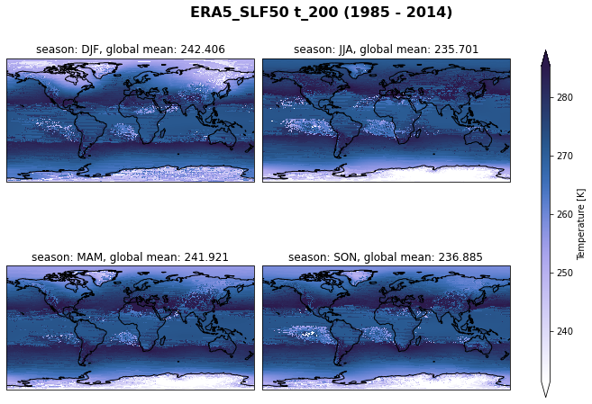
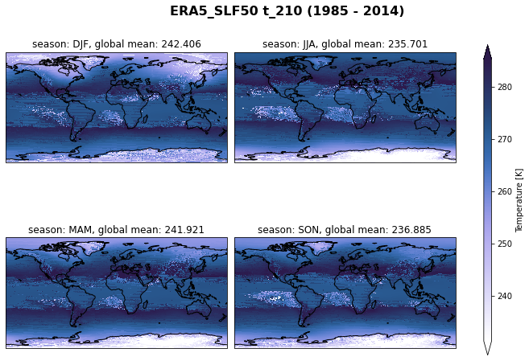
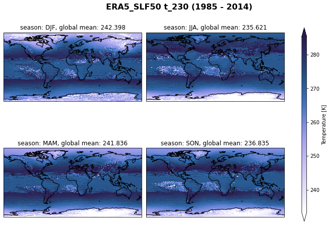
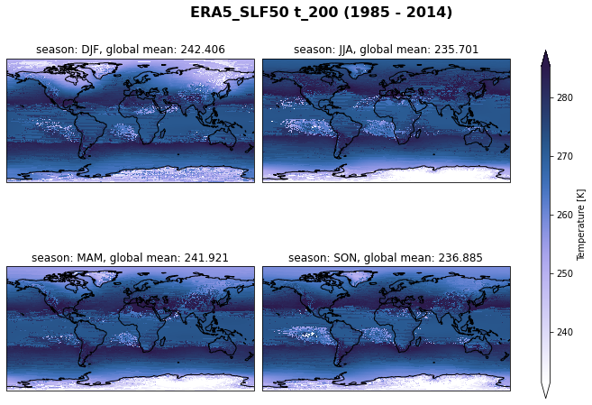
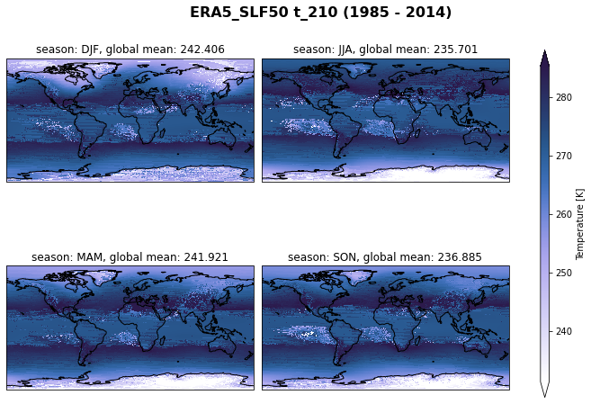
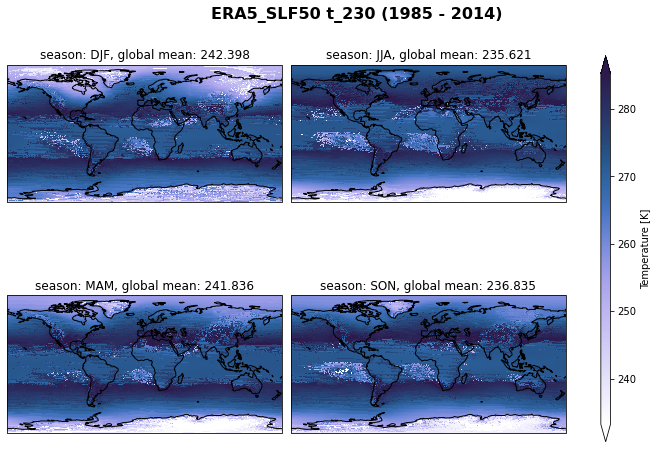

Example with ERA5 high-resolution (~0.25deg) monthly means
Contents
Example with ERA5 high-resolution (~0.25deg) monthly means#
Table of Contents#
1. Introduction #
Cloud feedbacks are a major contributor to the spread of climate sensitivity in global climate models (GCMs) (Zelinka et al. (2020)]). Among the most poorly understood cloud feedbacks is the one associated with the cloud phase, which is expected to be modified with climate change (Bjordal et al. (2020)). Cloud phase bias, in addition, has significant implications for the simulation of radiative properties and glacier and ice sheet mass balances in climate models.
In this context, this work aims to expand our knowledge on how the representation of the cloud phase affects snow formation in GCMs. Better understanding this aspect is necessary to develop climate models further and improve future climate predictions.
Load ERA5 data previously downloaded locally via Jupyter Notebook - download ERA5
find clouds: liquid-only, ice-only, mixed-phase
Regridd the ERA5 variables to the same horizontal resolution as high-resolution CMIP6 models with
xesmfCalculate and plot the seasonal mean of the variable
Questions
How is the cloud phase and snowfall varying between 1985 and 2014?
NOTE: We answer questions related to the comparison of CMIP models to ERA5 in another Jupyter Notebook.
2. Data Wrangling #
This study will compare surface snowfall, ice, and liquid water content from the Coupled Model Intercomparison Project Phase 6 (CMIP6) climate models (accessed through Pangeo) to the European Centre for Medium-Range Weather Forecast Re-Analysis 5 (ERA5) data from 1985 to 2014. We conduct statistical analysis at the annual and seasonal timescales to determine the biases in cloud phase and precipitation (liquid and solid) in the CMIP6 models and their potential connection between them. The CMIP6 data analysis can be found in the Jupyter Notebook for CMIP6.
Time period: 1985 to 2014
horizonal resolution: ~0.25deg
time resolution: monthly atmospheric data
Variables:
shortname |
Long name |
Units |
levels |
|---|---|---|---|
sf |
snowfall |
[m of water eq] |
surface |
msr |
mean_snowfall_rate |
[kg m-2 s-1] |
surface |
cswc |
specific_snow_water_content |
[kg kg-1] |
pl |
clwc |
specific_cloud_liquid_water_content |
[kg kg-1] |
pl |
clic |
specific_cloud_ice_water_content |
[kg kg-1] |
pl |
t |
temperature |
[K] |
pl |
2t |
2 metre temperature |
[K] |
surface |
tclw |
Total column cloud liquid water |
[kg m-2] |
single |
tciw |
Total column cloud ice water |
[kg m-2] |
single |
tcsw |
Total column snow water |
[kg m-2] |
single |
tcslw |
Total column supercooled liquid water |
[kg m-2] |
single |
tp |
Total precipitation |
[m] |
surface |
Organize my data#
Define a prefix for my project (you may need to adjust it for your own usage on your infrastructure).
input folder where all the data used as input to my Jupyter Notebook is stored (and eventually shared)
output folder where all the results to keep are stored
tool folder where all the tools
The ERA5 0.25deg data is located in the folder /input/ERA5/monthly_means/0.25deg.
import os
import pathlib
import sys
import socket
hostname = socket.gethostname()
abs_path = str(pathlib.Path(hostname).parent.absolute())
WORKDIR = abs_path[:- (len(abs_path.split('/')[-2] + abs_path.split('/')[-1])+1)]
if "mimi" in hostname:
print(hostname)
DATA_DIR = "/scratch/franzihe/"
FIG_DIR = "/uio/kant/geo-metos-u1/franzihe/Documents/Figures/ERA5/"
elif "glefsekaldt" in hostname:
DATA_DIR = "/home/franzihe/Data/"
FIG_DIR = "/home/franzihe/Documents/Figures/ERA5/"
INPUT_DATA_DIR = os.path.join(DATA_DIR, 'input')
OUTPUT_DATA_DIR = os.path.join(DATA_DIR, 'output')
UTILS_DIR = os.path.join(WORKDIR, 'utils')
sys.path.append(UTILS_DIR)
# make figure directory
try:
os.mkdir(FIG_DIR)
except OSError:
pass
mimi.uio.no
Import python packages#
Pythonenvironment requirements: file requirements_globalsnow.txtload
pythonpackages from imports.pyload
functionsfrom functions.py
# supress warnings
import warnings
warnings.filterwarnings('ignore') # don't output warnings
# import packages
from imports import(xr, intake, ccrs, cy, plt, glob, cm, fct, np, da)
xr.set_options(display_style='html')
<xarray.core.options.set_options at 0x7f8de00948b0>
# reload imports
%load_ext autoreload
%autoreload 2
Open ERA5 variables#
Get the data requried for the analysis. Beforehand we downloaded the monthly averaged data on single levels and pressure levels via the Climate Data Store (CDS) infrastructure. The github repository Download ERA5 gives examples on how to download the data from the CDS. We use the Jupyter Notebooks download_Amon_single_level and download_Amon_pressure_level. Both, download the monthly means for the variables mentioned above between 1985 and 2014.
NOTE: To download from CDS a user has to have a CDS user account, please create the account here.
era_in = os.path.join(INPUT_DATA_DIR, 'ERA5/monthly_means/0.25deg')
era_out = os.path.join(OUTPUT_DATA_DIR, 'ERA5/monthly_means/1deg')
# make output data directory
try:
os.mkdir(era_out)
except OSError:
pass
variable_id=[
'2t',
'clic',
'clwc',
'cswc',
'msr',
'sf',
't',
'tciw',
'tclw',
'tp',
'tcslw',
'tcrw',
'tcsw'
]
At the moment we have downloaded 30 years (1985-2014) for ERA5. We define start and end year to ensure to only extract the 30-year period between 1985 and 2014.
\(\rightarrow\) Define a start and end year
We will load all available variables into one xarray dataset with xarray.open_mfdataset(file) and select the time range by name.
# rsync -av --progress login.nird.sigma2.no:/projects/NS9600K/data/ERA5/monthly_means/0.25deg /scratch/franzihe/input/ERA5/monthly_means
starty = 1985; endy = 2014
year_range = range(starty, endy+1)
ds_era = xr.Dataset()
for var_id in variable_id:
# Input data from ERA5 with a resolution of 0.25x0.25deg to be regridded
era_file_in = glob('{}/{}_Amon_ERA5_*12.nc'.format(era_in, var_id)) # search for data in the local directory
ds = xr.open_mfdataset(era_file_in, )
# rename variable name in dataset to match variable_id
if var_id == '2t':
ds = ds.rename({'t2m':'2t'})
if var_id == 'clic':
ds = ds.rename({'ciwc':'clic'})
ds_era[var_id] = ds[var_id].sel(time = ds.time.dt.year.isin(year_range)).squeeze()
ds_era = ds_era.sel(time = ds_era.time.dt.year.isin(year_range)).squeeze()
# ds_era = fct.rename_coords_lon_lat(ds_era)
ds_era = ds_era.assign_coords(longitude=(((ds_era.longitude + 180) % 360) - 180)).sortby('longitude').sortby('time')
# create pressure array
ds_era['pressure'] = xr.DataArray(data=da.ones(shape = ds_era['clic'].shape,
),
dims=list(ds_era['clic'].dims),
coords=[ds_era.time.values, ds_era.level.values, ds_era.latitude.values, ds_era.longitude.values])
ds_era['pressure'] = ds_era['pressure']*ds_era['level'][::-1]
ds_era['pressure'] .attrs["units"] = 'hPa'
ds_era['pressure'] .attrs["long_name"] = 'Atmospheric pressure'
# # create occcurence array
# for var_id in ds_era.data_vars:
# ds_era[var_id + '_occurence'] = xr.DataArray(data=da.ones(shape = (ds_era['time'].shape[0],ds_era['latitude'].shape[0], ds_era['longitude'].shape[0]), ),
# dims=[ds_era['time'].dims[0],ds_era['latitude'].dims[0], ds_era['longitude'].dims[0]] ,
# coords=[ds_era['time'].values,ds_era['latitude'].values, ds_era['longitude'].values] )
# ds_era[var_id + '_occurence'].attrs["units"] = ''
# ds_era[var_id + '_occurence'].attrs["long_name"] = 'Occurence'
# ds_era = ds_era.chunk(chunks={"time":60, "level":37, "latitude":721, "longitude":1440}) # we have to chunk the data like this as the regridding showed to have some trouble because of chunking
Change attributes matching CMIP6 data#
We will assign the attributes to the variables to make CMIP6 and ERA5 variables comperable.
The data documentation of monthly means gives information about the accumulations in monthly means (of daily means, stream=moda/edmo). Hence, the precipitation variables have been scaled to have an “effective” processing period of one day, so for accumulations in these streams
sfis in m of water per day \(\rightarrow\) multiply by 1000 to get kg m-2 day-1 or mmday-1.tpis in m \(\rightarrow\) Multiply by 1000 to get mmciwc,clwc, andcswcis in kg kg-1 \(\rightarrow\) Multiply by 1000 to get g kg-1msris in kg m-2 s-1 \(\rightarrow\) Multiply by 86400 to get mm day-1tciwandtclwis in kg m-2 \(\rightarrow\) Multiply by 1000 to get g m-2
for var_id in variable_id:
if var_id == 'clic' or var_id == 'clwc' or var_id == 'cswc' or var_id == 'sf' or var_id == 'tciw' or var_id == 'tclw' \
or var_id == 'tp' or var_id == 'tcslw' or var_id == 'tcrw' or var_id == 'tcsw':
ds_era[var_id] = ds_era[var_id]*1000
if var_id == 'clic':
ds_era[var_id].attrs = {'units': 'g kg-1', 'long_name':'Specific cloud ice water content'}
ds_era['clic'] = ds_era['clic'].where(ds_era['clic'] >= 10**(-6))
if var_id == 'clwc':
ds_era[var_id].attrs = {'units': 'g kg-1', 'long_name':'Specific cloud liquid water content'}
ds_era['clwc'] = ds_era['clwc'].where(ds_era['clwc'] >= 10**(-6))
if var_id == 'cswc':
ds_era[var_id].attrs = {'units': 'g kg-1', 'long_name':'Specific snow water content'}
ds_era['cswc'] = ds_era['cswc'].where(ds_era['clwc'] >= 10**(-6))
if var_id == 'sf':
ds_era[var_id].attrs = {'units': 'mm day-1', 'long_name': 'Snowfall',}
ds_era['sf'] = ds_era['sf'].where(ds_era['sf'] >= 0., other= np.nan)
if var_id == 'tciw':
ds_era[var_id].attrs = {'units': 'g m-2', 'long_name': 'Total column cloud ice water'}
if var_id == 'tclw':
ds_era[var_id].attrs = {'units': 'g m-2', 'long_name': 'Total column cloud liquid water'}
if var_id == 'tcslw':
ds_era[var_id].attrs = {'units': 'g m-2', 'long_name': 'Total column supercooled liquid water'}
if var_id == 'tcrw':
ds_era[var_id].attrs = {'units': 'g m-2', 'long_name': 'Total column rain water'}
if var_id == 'tcsw':
ds_era[var_id].attrs = {'units': 'g m-2', 'long_name': 'Total column snow water'}
if var_id == 'tp':
ds_era[var_id].attrs = {'units': 'mm', 'long_name': 'Total precipitation'}
if var_id == 'msr':
ds_era[var_id] = ds_era[var_id]*86400
ds_era[var_id].attrs = {'units': 'mm day-1', 'long_name': 'Mean snowfall rate'}
Specific ice and snow water content#
To get all all frozen particles in the column we have to add the variables specific cloud ice content and specific snow water content.
ds_era['cisc'] = ds_era['clic'] + ds_era['cswc']
ds_era['cisc'].attrs = {'units': 'g kg-1', 'long_name':'Specific cloud ice and snow water content'}
Total column cloud ice water and total column cloud snow water#
To get all all frozen particles in the column we have to add the variables total_column_cloud_ice_water and total_column_snow_water.
ds_era['tcisw'] = ds_era['tciw'] + ds_era['tcsw']
ds_era['tcisw'].attrs = {'units': 'g m-2', 'long_name': 'Total column cloud ice and snow water'}
Total column cloud liquid water, total column supercooled liquid water, total column rain water#
To get all all liquid particles in the column we have to add the variables total_column_cloud_liquid_water, total_column_supercooled_liquid_water, and total_column_rain_water.
ds_era['tclslrw'] = ds_era['tclw'] + ds_era['tcslw'] + ds_era['tcrw']
ds_era['tclslrw'].attrs = {'units': 'g m-2', 'long_name': 'Total column cloud liquid, supercooled liqid, and rain water'}
Supercooled liquid water fraction#
ds_era['SLF'] = ds_era['clwc']/(ds_era['clwc'] + ds_era['cisc'])
ds_era['SLF'].attrs = {'units': '', 'long_name':'Super cooled liquid water fraction'}
ds_era['SLF'] = fct.set4D_latitude_values_nan(ds_era['SLF'], 45, -45)
# find only SLF where snowfall
ds_era['SLF_sf'] = ds_era['SLF'].where((ds_era['sf'] * 3600/86400) >= 0.01)
ds_era['SLF_sf'] = ds_era['SLF_sf'].sortby('latitude', ascending=True)
ds_era['SLF_sf'] = ds_era['SLF_sf'].groupby('time.season').mean(('time', 'longitude'), skipna=True)
fig, axsm = plt.subplots(2,2, sharex=True, sharey=True, figsize=[15, 7.5])
for ax, sea in zip(axsm.flatten(), ds_era['SLF_sf'].season):
cf = ds_era['SLF_sf'].sel(season=sea).plot(ax=ax,x='latitude', y='level', cmap=cm.tokyo_r, levels=np.arange(0,1.1,0.1), ylim= [1000, 1], yincrease=False, add_colorbar=False)
ax.grid()
ax.set(title='season = {}'.format(sea.values), ylabel='Pressure [hPa]', xlabel='Latitude')
fig.suptitle('ERA5 ({} - {})'.format(starty, endy), fontweight="bold")
cbaxes = fig.add_axes([0.1, 0.0, 0.8, 0.025])
cbar = plt.colorbar(cf, cax=cbaxes, shrink=0.5, orientation='horizontal', label='Supercooled liquid water fraction')
Statistics#
For variables:
Snowfall [sf]
Total column cloud liquid, supercooled liqid, and rain water [tclslrw]
Total column cloud ice, snow water [tcisw]
2m-Temperature [2t]
Find where liquid water path is \(\ge\) 5 g m-2
Find where snowfall is \(\ge\) 0.01mm h-1
Find where 2m-temperature \(\le\) 0 \(^o\) C
ds_era['sf'] = fct.set3D_latitude_values_nan(ds_era['sf'], 45, -45)
ds_era['tclslrw'] = fct.set3D_latitude_values_nan(ds_era['tclslrw'], 45, -45)
ds_era['tcisw'] = fct.set3D_latitude_values_nan(ds_era['tcisw'], 45, -45)
ds_era['2t'] = fct.set3D_latitude_values_nan(ds_era['2t'], 45, -45)
# 1. find where LWP >=5 gm-2
sf = ds_era['sf'].where(ds_era['tclslrw']>=5)
lwp = ds_era['tclslrw'].where(ds_era['tclslrw']>=5)
iwp = ds_era['tcisw'].where(ds_era['tclslrw']>=5)
t2 = ds_era['2t'].where(ds_era['tclslrw']>=5)
# 2. find where snowfall >= 0.01mmh-1
unit_sf = ds_era['sf']*(3600/86400)
sf = sf.where(unit_sf>0.01)
lwp = lwp.where(unit_sf>0.01)
iwp = iwp.where(unit_sf>0.01)
t2 = t2.where(unit_sf>0.01)
# 3. find where 2m-temperature <= 0C
sf = sf.where(ds_era['2t']<=273.15)
lwp = lwp.where(ds_era['2t']<=273.15)
iwp = iwp.where(ds_era['2t']<=273.15)
t2 = t2.where(ds_era['2t']<=273.15)
sf_count = sf.groupby('time.season').count(dim='time',keep_attrs=True)
lwp_count = lwp.groupby('time.season').count(dim='time',keep_attrs=True)
iwp_count = iwp.groupby('time.season').count(dim='time', keep_attrs=True)
t2_count = t2.groupby('time.season').count(dim='time', keep_attrs=True)
# variable = (sf/lwp)
variable = sf.groupby('time.season').mean(dim='time',keep_attrs=True, skipna=True)
variable = sf_count
variable = variable.where(variable>0.)
f, axsm = plt.subplots(nrows=2,ncols=4,figsize =[10,7], subplot_kw={'projection': ccrs.NorthPolarStereo(central_longitude=0.0,globe=None)})
for ax, season in zip(axsm.flatten()[:4], variable.season):
ax.add_feature(cy.feature.COASTLINE, alpha=0.5)
ax.set_extent([-180, 180, 90, 45], ccrs.PlateCarree())
ax.set(title ='season = {}'.format(season.values))
gl = ax.gridlines(draw_labels=True)
gl.top_labels = False
gl.right_labels = False
variable.sel(season=season).plot(ax=ax, transform=ccrs.PlateCarree(), add_colorbar=False,
cmap=cm.hawaii_r, levels=np.arange(0,100,10))
for ax, i, season in zip(axsm.flatten()[4:], np.arange(5,9), variable.season):
ax.remove()
ax = f.add_subplot(2,4,i, projection=ccrs.SouthPolarStereo(central_longitude=0.0, globe=None))
ax.add_feature(cy.feature.COASTLINE, alpha=0.5)
ax.set_extent([-180, 180, -90, -45], ccrs.PlateCarree())
ax.set(title ='season = {}'.format(season.values))
gl = ax.gridlines(draw_labels=True)
gl.top_labels = False
gl.right_labels = False
cf = variable.sel(season=season).plot(ax=ax, transform=ccrs.PlateCarree(), add_colorbar=False,
cmap=cm.hawaii_r, levels=np.arange(0,100,10))
cbaxes = f.add_axes([1.0125, 0.025, 0.025, 0.9])
cbar = plt.colorbar(cf, cax=cbaxes, shrink=0.5, orientation='vertical', label='{} frequency (month)'.format(variable.attrs['long_name'],))
f.suptitle('ERA5 {} ({} - {}) Count of months where sf >= 7.2mm'.format(variable.attrs['long_name'], starty,endy), fontweight="bold");
plt.tight_layout(pad=0., w_pad=0., h_pad=0.)
variable = ((sf/iwp).groupby('time.season').mean('time', keep_attrs=True, skipna=True))
f, axsm = plt.subplots(nrows=2,ncols=4,figsize =[10,7], subplot_kw={'projection': ccrs.NorthPolarStereo(central_longitude=0.0,globe=None)})
for ax, season in zip(axsm.flatten()[:4], variable.season):
ax.add_feature(cy.feature.COASTLINE, alpha=0.5)
ax.set_extent([-180, 180, 90, 45], ccrs.PlateCarree())
ax.set(title ='season = {}'.format(season.values))
gl = ax.gridlines(draw_labels=True)
gl.top_labels = False
gl.right_labels = False
variable.sel(season=season).plot(ax=ax, transform=ccrs.PlateCarree(), #add_colorbar=False,
cmap=cm.hawaii_r, )#levels=np.arange(0,100,10))
for ax, i, season in zip(axsm.flatten()[4:], np.arange(5,9), variable.season):
ax.remove()
ax = f.add_subplot(2,4,i, projection=ccrs.SouthPolarStereo(central_longitude=0.0, globe=None))
ax.add_feature(cy.feature.COASTLINE, alpha=0.5)
ax.set_extent([-180, 180, -90, -45], ccrs.PlateCarree())
ax.set(title ='season = {}'.format(season.values))
gl = ax.gridlines(draw_labels=True)
gl.top_labels = False
gl.right_labels = False
cf = variable.sel(season=season).plot(ax=ax, transform=ccrs.PlateCarree(), add_colorbar=False,
cmap=cm.hawaii_r, levels=np.arange(0,100,10))
cbaxes = f.add_axes([1.0125, 0.025, 0.025, 0.9])
cbar = plt.colorbar(cf, cax=cbaxes, shrink=0.5, orientation='vertical', label='{} precipitation efficency ()'.format(variable.attrs['long_name'],))
f.suptitle('ERA5 Snowfall/LWP ({} - {}) where sf >= 7.2mm'.format(starty,endy), fontweight="bold");
plt.tight_layout(pad=0., w_pad=0., h_pad=0.)
projection= ccrs.AzimuthalEquidistant(central_longitude=0,central_latitude=90,)
f, axsm = plt.subplots(1,4,figsize=[10,7], subplot_kw={'projection':projection}, sharex=True, sharey=True)
for ax, seas in zip(axsm.flatten(), variable.season):
cf = variable.where(variable>0.).sel(season=seas).plot(ax=ax, transform=ccrs.PlateCarree(), add_colorbar=False,
cmap=cm.hawaii_r, )#levels=np.arange(0,0.6,0.10), vmax=0.5)
ax.add_feature(cy.feature.COASTLINE, alpha=0.5)
ax.set_extent([-180, 180, 90, 45], ccrs.PlateCarree())
gl = ax.gridlines(draw_labels=True)
gl.top_labels = False
gl.right_labels = False
ax.set(title ='season = {}'.format(seas.values))
cbaxes = f.add_axes([0.9, 0.025, 0.025, 0.9])
cbar = plt.colorbar(cf, cax=cbaxes, shrink=0.5, orientation='vertical', label='{} precipitation efficency ()'.format(variable.attrs['long_name'],))
f.suptitle('ERA5 ({} - {}) Count of months where sf >= 7.2mm'.format(starty,endy), fontweight="bold");
plt.tight_layout(pad=0., w_pad=0., h_pad=0.)
variable = lwp.groupby('time.season').mean(dim='time',keep_attrs=True, skipna=True)
projection= ccrs.AzimuthalEquidistant(central_longitude=0,central_latitude=90,)
f, axsm = plt.subplots(1,4,figsize=[10,7], subplot_kw={'projection':projection}, sharex=True, sharey=True)
for ax, seas in zip(axsm.flatten(), variable.season):
cf = variable.where(variable>0.).sel(season=seas).plot(ax=ax, transform=ccrs.PlateCarree(), add_colorbar=False,
cmap=cm.hawaii_r, )#levels=np.arange(0,0.6,0.10), vmax=0.5)
ax.add_feature(cy.feature.COASTLINE, alpha=0.5)
ax.set_extent([-180, 180, 90, 45], ccrs.PlateCarree())
gl = ax.gridlines(draw_labels=True)
gl.top_labels = False
gl.right_labels = False
ax.set(title ='season = {}'.format(seas.values))
cbaxes = f.add_axes([0.9, 0.025, 0.025, 0.9])
cbar = plt.colorbar(cf, cax=cbaxes, shrink=0.5, orientation='vertical', )#label='{} frequency (month)'.format(variable.attrs['long_name'],))
# f.suptitle('ERA5 ({} - {}) Count of months where sf >= 7.2mm'.format(starty,endy), fontweight="bold");
plt.tight_layout(pad=0., w_pad=0., h_pad=0.)
variable = ((sf/lwp).groupby('time.season').mean('time', keep_attrs=True, skipna=True))
projection= ccrs.AzimuthalEquidistant(central_longitude=0,central_latitude=90,)
f, axsm = plt.subplots(1,4,figsize=[10,7], subplot_kw={'projection':projection}, sharex=True, sharey=True)
for ax, seas in zip(axsm.flatten(), variable.season):
cf = variable.where(variable>0.).sel(season=seas).plot(ax=ax, transform=ccrs.PlateCarree(), add_colorbar=False,
cmap=cm.hawaii_r, )#levels=np.arange(0,0.6,0.10), vmax=0.5)
ax.add_feature(cy.feature.COASTLINE, alpha=0.5)
ax.set_extent([-180, 180, 90, 45], ccrs.PlateCarree())
gl = ax.gridlines(draw_labels=True)
gl.top_labels = False
gl.right_labels = False
ax.set(title ='season = {}'.format(seas.values))
cbaxes = f.add_axes([0.9, 0.025, 0.025, 0.9])
cbar = plt.colorbar(cf, cax=cbaxes, shrink=0.5, orientation='vertical', )#label='{} frequency (month)'.format(variable.attrs['long_name'],))
# f.suptitle('ERA5 ({} - {}) Count of months where sf >= 7.2mm'.format(starty,endy), fontweight="bold");
plt.tight_layout(pad=0., w_pad=0., h_pad=0.)
variable = ((sf/iwp).groupby('time.season').mean('time', keep_attrs=True, skipna=True))
projection= ccrs.AzimuthalEquidistant(central_longitude=0,central_latitude=90,)
f, axsm = plt.subplots(1,4,figsize=[10,7], subplot_kw={'projection':projection}, sharex=True, sharey=True)
for ax, seas in zip(axsm.flatten(), variable.season):
cf = variable.where(variable>0.).sel(season=seas).plot(ax=ax, transform=ccrs.PlateCarree(), add_colorbar=False,
cmap=cm.hawaii_r, )#levels=np.arange(0,0.6,0.10), vmax=0.5)
ax.add_feature(cy.feature.COASTLINE, alpha=0.5)
ax.set_extent([-180, 180, 90, 45], ccrs.PlateCarree())
gl = ax.gridlines(draw_labels=True)
gl.top_labels = False
gl.right_labels = False
ax.set(title ='season = {}'.format(seas.values))
cbaxes = f.add_axes([0.9, 0.025, 0.025, 0.9])
cbar = plt.colorbar(cf, cax=cbaxes, shrink=0.5, orientation='vertical', )#label='{} frequency (month)'.format(variable.attrs['long_name'],))
# f.suptitle('ERA5 ({} - {}) Count of months where sf >= 7.2mm'.format(starty,endy), fontweight="bold");
plt.tight_layout(pad=0., w_pad=0., h_pad=0.)

lwp.groupby('time.season').mean(('time', 'latitude', 'longitude'), keep_attrs=True, skipna=True)
<xarray.DataArray 'tclslrw' (season: 4)>
dask.array<stack, shape=(4,), dtype=float32, chunksize=(1,), chunktype=numpy.ndarray>
Coordinates:
* season (season) object 'DJF' 'JJA' 'MAM' 'SON'
Attributes:
units: g m-2
long_name: Total column cloud liquid, supercooled liqid, and rain waterplt.scatter(x=lwp.groupby('time.season').mean(('time', 'latitude', 'longitude'), keep_attrs=True, skipna=True),
y=sf.groupby('time.season').mean(('time', 'latitude', 'longitude'), keep_attrs=True, skipna=True))
<matplotlib.collections.PathCollection at 0x7f8a023066a0>
_lwp = lwp.groupby('time.season').mean(('time', ), keep_attrs=True, skipna=True)
_sf =sf.groupby('time.season').mean(('time', ), keep_attrs=True, skipna=True)
f, axsm = plt.subplots(2,2)
for ax,seas in zip(axsm.flatten(), _lwp.season):
ax.scatter(x=_lwp.sel(season=seas),
y=_sf.sel(season=seas))
_iwp = iwp.groupby('time.season').mean(('time', ), keep_attrs=True, skipna=True)
f, axsm = plt.subplots(2,2)
for ax,seas in zip(axsm.flatten(), _iwp.season):
ax.scatter(x=_iwp.sel(season=seas),
y=_sf.sel(season=seas))
_pp = np.asarray(_iwp.sel(season=seas))
_cl = np.asarray(_sf.sel(season=sea))
_p = _pp[~np.isnan(_pp)]
_c = _cl[~np.isnan(_pp)]
_p = _p[~np.isnan(_c)]
_c = _c[~np.isnan(_c)]
f, axsm = plt.subplots(2,2)
for ax,seas in zip(axsm.flatten(), _iwp.season):
counts, xedges, yedges, im = ax.hist2d(x=_p,
y=_c, cmap=cm.hawaii_r, )#bins=[100,5],cmin=1, range=[[0, 500], [0,20]])
cbar_ax = f.add_axes([1.01, 0.15, 0.025, 0.7])
cbar = f.colorbar(im, cax=cbar_ax)
((sf/lwp).groupby('time.season').mean('time', keep_attrs=True, skipna=True)).plot(col='season', cmap=cm.hawaii_r, levels=np.arange(0,0.6,0.1))
<xarray.plot.facetgrid.FacetGrid at 0x7f89e3f0da00>
lwp
<xarray.DataArray 'tclslrw' (time: 360, latitude: 721, longitude: 1440)>
dask.array<where, shape=(360, 721, 1440), dtype=float32, chunksize=(120, 721, 1440), chunktype=numpy.ndarray>
Coordinates:
* latitude (latitude) float32 90.0 89.75 89.5 89.25 ... -89.5 -89.75 -90.0
* longitude (longitude) float32 -180.0 -179.8 -179.5 ... 179.2 179.5 179.8
* time (time) datetime64[ns] 1985-01-01 1985-02-01 ... 2014-12-01
Attributes:
units: g m-2
long_name: Total column cloud liquid, supercooled liqid, and rain water(sf/lwp).groupby('time.season').mean('time', keep_attrs=True, skipna=True)#.plot(col=2, col_wrap='season')
<xarray.DataArray (season: 4, latitude: 721, longitude: 1440)>
dask.array<stack, shape=(4, 721, 1440), dtype=float32, chunksize=(1, 721, 1440), chunktype=numpy.ndarray>
Coordinates:
* latitude (latitude) float32 90.0 89.75 89.5 89.25 ... -89.5 -89.75 -90.0
* longitude (longitude) float32 -180.0 -179.8 -179.5 ... 179.2 179.5 179.8
* season (season) object 'DJF' 'JJA' 'MAM' 'SON'
Attributes:
units: mm day-1
long_name: Snowfallf, axsm = plt.subplots(figsize=[10,7], )
# axsm[0, 0:4].remove()
axsm_arc = f.add_subplot(1, 4, subplot_kw={'projection':projection})
axsm_ant = f.add_subplot(1, 4, subplot_kw={'projection':})
---------------------------------------------------------------------------
AttributeError Traceback (most recent call last)
/uio/kant/geo-metos-u1/franzihe/Documents/Python/globalsnow/CloudSat_ERA5_CMIP6_analysis/work/ERA5/ERA5_1985-2014.ipynb Cell 36 in <module>
<a href='vscode-notebook-cell://ssh-remote%2Bmimi.uio.no/uio/kant/geo-metos-u1/franzihe/Documents/Python/globalsnow/CloudSat_ERA5_CMIP6_analysis/work/ERA5/ERA5_1985-2014.ipynb#Y211sdnNjb2RlLXJlbW90ZQ%3D%3D?line=0'>1</a> f, axsm = plt.subplots(figsize=[10,7], )
<a href='vscode-notebook-cell://ssh-remote%2Bmimi.uio.no/uio/kant/geo-metos-u1/franzihe/Documents/Python/globalsnow/CloudSat_ERA5_CMIP6_analysis/work/ERA5/ERA5_1985-2014.ipynb#Y211sdnNjb2RlLXJlbW90ZQ%3D%3D?line=1'>2</a> # axsm[0, 0:4].remove()
----> <a href='vscode-notebook-cell://ssh-remote%2Bmimi.uio.no/uio/kant/geo-metos-u1/franzihe/Documents/Python/globalsnow/CloudSat_ERA5_CMIP6_analysis/work/ERA5/ERA5_1985-2014.ipynb#Y211sdnNjb2RlLXJlbW90ZQ%3D%3D?line=2'>3</a> axsm_arc = f.add_subplot(1, 4, subplot_kw={'projection':projection})
File ~/miniconda3/envs/geocat/lib/python3.9/site-packages/matplotlib/figure.py:772, in FigureBase.add_subplot(self, *args, **kwargs)
769 args = tuple(map(int, str(args[0])))
770 projection_class, pkw = self._process_projection_requirements(
771 *args, **kwargs)
--> 772 ax = subplot_class_factory(projection_class)(self, *args, **pkw)
773 key = (projection_class, pkw)
774 return self._add_axes_internal(ax, key)
File ~/miniconda3/envs/geocat/lib/python3.9/site-packages/matplotlib/axes/_subplots.py:34, in SubplotBase.__init__(self, fig, *args, **kwargs)
15 """
16 Parameters
17 ----------
(...)
31 Keyword arguments are passed to the Axes (sub)class constructor.
32 """
33 # _axes_class is set in the subplot_class_factory
---> 34 self._axes_class.__init__(self, fig, [0, 0, 1, 1], **kwargs)
35 # This will also update the axes position.
36 self.set_subplotspec(SubplotSpec._from_subplot_args(fig, args))
File ~/miniconda3/envs/geocat/lib/python3.9/site-packages/matplotlib/_api/deprecation.py:456, in make_keyword_only.<locals>.wrapper(*args, **kwargs)
450 if len(args) > name_idx:
451 warn_deprecated(
452 since, message="Passing the %(name)s %(obj_type)s "
453 "positionally is deprecated since Matplotlib %(since)s; the "
454 "parameter will become keyword-only %(removal)s.",
455 name=name, obj_type=f"parameter of {func.__name__}()")
--> 456 return func(*args, **kwargs)
File ~/miniconda3/envs/geocat/lib/python3.9/site-packages/matplotlib/axes/_base.py:646, in _AxesBase.__init__(self, fig, rect, facecolor, frameon, sharex, sharey, label, xscale, yscale, box_aspect, **kwargs)
643 if yscale:
644 self.set_yscale(yscale)
--> 646 self.update(kwargs)
648 for name, axis in self._get_axis_map().items():
649 axis.callbacks._pickled_cids.add(
650 axis.callbacks.connect(
651 'units', self._unit_change_handler(name)))
File ~/miniconda3/envs/geocat/lib/python3.9/site-packages/matplotlib/artist.py:1064, in Artist.update(self, props)
1062 func = getattr(self, f"set_{k}", None)
1063 if not callable(func):
-> 1064 raise AttributeError(f"{type(self).__name__!r} object "
1065 f"has no property {k!r}")
1066 ret.append(func(v))
1067 if ret:
AttributeError: 'AxesSubplot' object has no property 'subplot_kw'
lwp_count.where(lwp_count >0.).plot(col='season',col_wrap=2, cmap=cm.hawaii_r, levels=np.arange(0,100,10), vmax=100)
<xarray.plot.facetgrid.FacetGrid at 0x7f8a3c8e62e0>
lwp.groupby('time.season').mean('time', keep_attrs=True, skipna=True).plot(x='longitude', y='latitude',col='season',col_wrap=2,cmap=cm.davos_r)
<xarray.plot.facetgrid.FacetGrid at 0x7f8a4cff39a0>
Mask atmopsheric temperature#
During the process of finding the SLF50, SLF30, SLF70 we encountered the problem, that the atmospheric temperature is too cold with \(T<175K\). To avoid cold temperatures we will mask the atmospheric temperature values. For this we will try a few thresholds and see how it looks on a spatial map, if we are masking too many temperatures then we know that our threshold is too warm.
Test for:
150K = -123.15 \(^oC\)
175K = -98.15 \(^oC\)
200K = -73.15 \(^oC\)
210K = -63.15 \(^oC\)
220K = -53.15 \(^oC\)
230K = -43.15 \(^oC\)
We have different possibilities to mask the temperature:
Mask t, but all the other vertical variables still keep their values where t<threshold
Mask t, and all other vertical variables where t<threshold
Mask t, find the lowest pressure level and t, if t==NaN then take the atmospheric pressure, temperature from the layer above
use Method 1. for now
var_id = 't'
temp = (150, 175, 200, 210, 220, 230)
for t in temp:
ds_era['{}_{}'.format(var_id, t)] = ds_era[var_id].where(ds_era[var_id] >= t)
Regrid ERA5 data to common NorESM2-MM grid #
We want to conduct statistical analysis at the annual and seasonal timescales to determine the biases in cloud phase and precipitation (liquid and solid) for the CMIP6 models in comparison to ERA5.
The ERA5 data has a nominal resolution of 0.25 deg and has to be regridded to the same horizontal resolution as the NorESM2-MM. Hence we will make use of the python package xesmf and decreasing resolution, Limitations and warnings.
\(\rightarrow\) Define NorESM2-MM as the reference grid ds_out.
Save all variables in one file and each variable to a netcdf datasets between 1985 an 2014, locally.
NOTE: This can take a while, so be patient
Open CMIP6 online catalog and search corresponding data#
… by using intake from pangeo.io, specifically intake-esm.
An example on Loading an ESM collection and searching for datasets can also be found on the Pangeo / ESGF Cloud Data Working Group documentation.
using intake-esm’s
search()function:col.search(variable_id, source_id, experiment_id, table_id, member_id, institution_id, grid_label)
# Read in the output grid from NorESM
cat_url = "https://storage.googleapis.com/cmip6/pangeo-cmip6.json"
col = intake.open_esm_datastore(cat_url)
cat = col.search(variable_id ='areacella', source_id = 'NorESM2-MM', experiment_id = 'historical', member_id=['r1i1p1f1'])
cmip_in = cat.to_dataset_dict(zarr_kwargs={'use_cftime':True})
ds_out = cmip_in['CMIP.NCC.NorESM2-MM.historical.fx.gn'].isel(member_id =0).drop(labels='areacella')
# Shift the longitude from 0-->360 to -180-->180 and sort by longitude and time
ds_out = ds_out.assign_coords(lon=(((ds_out.lon + 180) % 360) - 180)).sortby('lon')
--> The keys in the returned dictionary of datasets are constructed as follows:
'activity_id.institution_id.source_id.experiment_id.table_id.grid_label'
counter = 0
keys = 'ERA5'
# Regrid data
era_in_1deg = fct.regrid_data(ds_era, ds_out)
filename = '{}_Amon_1deg_{}01_{}12.nc'.format(keys,starty, endy)
era_file_out = os.path.join(era_out, filename)
files = glob(era_file_out)
if era_file_out in files:
# print('{} is downloaded'.format(era_file_out))
# counter += 1
# print('Have regridded in total: {:} files'.format(str(counter)))
# else: # Save to netcdf file
era_in_1deg.to_netcdf(era_file_out)
print('file written: {}'.format(era_file_out))
2t True
clic True
clwc True
cswc True
msr True
sf True
t True
tciw True
tclw True
tp True
pressure True
2t_occurence True
clic_occurence True
clwc_occurence True
cswc_occurence True
msr_occurence True
sf_occurence True
t_occurence True
tciw_occurence True
tclw_occurence True
tp_occurence True
pressure_occurence True
cisc True
t_150 True
t_175 True
t_200 True
t_210 True
t_220 True
t_230 True
file written: /scratch/franzihe/output/ERA5/monthly_means/1deg/ERA5_Amon_1deg_198501_201412.nc
for var_id in era_in_1deg.data_vars:
if var_id.find('occurence')==-1:
# select where data should be saved
filename = '{}_{}_Amon_1deg_{}01_{}12.nc'.format(var_id, keys,starty, endy)
era_file_out = os.path.join(era_out, filename)
files = glob(era_file_out)
if era_file_out in files:
# print('{} is downloaded'.format(era_file_out))
# counter += 1
# print('Have regridded in total: {:} files'.format(str(counter)))
# else: # Save to netcdf file
era_in_1deg[var_id].to_netcdf(era_file_out)
print('file written: {}'.format(era_file_out))
file written: /scratch/franzihe/output/ERA5/monthly_means/1deg/2t_ERA5_Amon_1deg_198501_201412.nc
file written: /scratch/franzihe/output/ERA5/monthly_means/1deg/clic_ERA5_Amon_1deg_198501_201412.nc
file written: /scratch/franzihe/output/ERA5/monthly_means/1deg/clwc_ERA5_Amon_1deg_198501_201412.nc
file written: /scratch/franzihe/output/ERA5/monthly_means/1deg/cswc_ERA5_Amon_1deg_198501_201412.nc
file written: /scratch/franzihe/output/ERA5/monthly_means/1deg/msr_ERA5_Amon_1deg_198501_201412.nc
file written: /scratch/franzihe/output/ERA5/monthly_means/1deg/sf_ERA5_Amon_1deg_198501_201412.nc
file written: /scratch/franzihe/output/ERA5/monthly_means/1deg/t_ERA5_Amon_1deg_198501_201412.nc
file written: /scratch/franzihe/output/ERA5/monthly_means/1deg/tciw_ERA5_Amon_1deg_198501_201412.nc
file written: /scratch/franzihe/output/ERA5/monthly_means/1deg/tclw_ERA5_Amon_1deg_198501_201412.nc
file written: /scratch/franzihe/output/ERA5/monthly_means/1deg/tp_ERA5_Amon_1deg_198501_201412.nc
file written: /scratch/franzihe/output/ERA5/monthly_means/1deg/pressure_ERA5_Amon_1deg_198501_201412.nc
file written: /scratch/franzihe/output/ERA5/monthly_means/1deg/cisc_ERA5_Amon_1deg_198501_201412.nc
# ERA5 data
# rsync -av --progress /scratch/franzihe/output/ERA5/monthly_means/1deg/ login.nird.sigma2.no:/projects/NS9600K/data/ERA5/monthly_means/1deg/
3. Exploratory Data Analysis #
Create global mean and seasonal mean/spread of all ERA5 data#
# 0.25 deg resolution data
season_mean_025deg = ds_era.copy()
for var_id in ds_era.data_vars:
if var_id.find('occurence')==-1:
season_mean_025deg = fct.seasonal_mean_std(season_mean_025deg, var_id)
season_mean_025deg = season_mean_025deg.drop_dims('time')
# 1 deg resolution data
season_mean_1deg = era_in_1deg.copy()
for var_id in era_in_1deg.data_vars:
if var_id.find('occurence')==-1:
season_mean_1deg = fct.seasonal_mean_std(season_mean_1deg, var_id)
season_mean_1deg = season_mean_1deg.drop_dims('time')
Find mixed-phase clouds#
Calculate the IWC/LWC statistics given by the values. Setting the value to 0.5 will find the level in the atmosphere where IWC and LWC are 50/50. Setting it to a value of 0.7 will find the level where IWC is 70% while LWC is 30%.
find the fraction of IWC to LWC $\(SLF = \frac{LWC}{IWC + LWC}\)\( \)\(SLF: \text{Super-cooled liquid water fraction}\)$
find the nearest value to given IWC-fraction
find atmospheric pressure levels where IWC/LWC fraction occurs
find the index of the first atmospheric pressure level
use the index to select variables
Create dictionary from the list of datasets we want to use for the IWC/LWC statistics
SLF = {'SLF50':0.5, 'SLF70':0.7, 'SLF30':0.5}
# find IWC/LWC levels
ds_era_025deg = fct.dataset_IWC_LWC_level(ds_era, SLF, 'clwc', 'cisc', keys)
ds_era_1deg = fct.dataset_IWC_LWC_level(era_in_1deg, SLF, 'clwc', 'cisc', keys)
season_mean_025deg = fct.dataset_IWC_LWC_level(season_mean_025deg, SLF, 'clwc_mean', 'cisc_mean', keys)
season_mean_1deg = fct.dataset_IWC_LWC_level(season_mean_1deg, SLF, 'clwc_mean', 'cisc_mean', keys)
Plot the seasonal mean of each variable#
for the original dataset
and where the IWC/LWC level were found
for IWC/LWC 50/50
for IWC/LWC 70/30
for IWC/LWC 30/70
All plots are for ERA resolution at 1 deg.
stat = 'ERA5_SLF50'
var_id = 't'
extend = 'both'
title = '{} {} ({} - {})'.format(stat, var_id, starty, endy)
variable = season_mean_025deg[var_id+'_mean'].sel(statistic=stat).sum('level', skipna=True, keep_attrs=True)
global_mean = ds_era_025deg[var_id].sel(statistic=stat).sum('level', skipna=True, keep_attrs=True).mean(('latitude', 'longitude'),skipna=True, keep_attrs=True).groupby("time.season").mean("time", skipna=True, keep_attrs=True)
fg = variable.plot(
col="season",
col_wrap=2,
transform=ccrs.PlateCarree(), # remember to provide this!
subplot_kws={
"projection": ccrs.PlateCarree()
},
cbar_kwargs={"orientation": "vertical", "shrink": 0.8, "aspect": 40},
cmap=cm.devon_r,
figsize=[10, 7],
robust=True,
extend=extend,
# add_colorbar=False,
# vmin=fct.plt_dict[var_id][fct.plt_dict['header'].index('vmin')],
# vmax=fct.plt_dict[var_id][fct.plt_dict['header'].index('vmax')],
# levels=fct.plt_dict[var_id][fct.plt_dict['header'].index('levels')],
)
for ax, i in zip(fg.axes.flat, variable.season.values):
ax.set_title('season: {}, global mean: {:.3f}'.format(i, global_mean.sel(season=i).values))
fg.map(lambda: plt.gca().coastlines())
fg.fig.suptitle(title, fontsize=16, fontweight="bold")
# fg.add_colorbar(fraction=0.05, pad=0.04)
# fg.cbar.set_label(label='{}'.format(fct.plt_dict[var_id][fct.plt_dict['header'].index('label')], weight='bold'))
Text(0.5, 0.98, 'ERA5_SLF50 t (1985 - 2014)')
for t in temp:
var_id = 't_{}'.format(t)
title = '{} {} ({} - {})'.format(stat, var_id, starty, endy)
variable = season_mean_025deg[var_id+'_mean'].sel(statistic=stat).sum('level', skipna=True, keep_attrs=True)
global_mean = ds_era_025deg[var_id].sel(statistic=stat).sum('level', skipna=True, keep_attrs=True).mean(('latitude', 'longitude'),skipna=True, keep_attrs=True).groupby("time.season").mean("time", skipna=True, keep_attrs=True)
fg = variable.plot(
col="season",
col_wrap=2,
transform=ccrs.PlateCarree(), # remember to provide this!
subplot_kws={
"projection": ccrs.PlateCarree()
},
cbar_kwargs={"orientation": "vertical", "shrink": 0.8, "aspect": 40},
cmap=cm.devon_r,
figsize=[10, 7],
robust=True,
extend=extend,
# add_colorbar=False,
# vmin=fct.plt_dict['t'][fct.plt_dict['header'].index('vmin')],
# vmax=fct.plt_dict['t'][fct.plt_dict['header'].index('vmax')],
# levels=fct.plt_dict['t'][fct.plt_dict['header'].index('levels')],
)
for ax, i in zip(fg.axes.flat, variable.season.values):
ax.set_title('season: {}, global mean: {:.3f}'.format(i, global_mean.sel(season=i).values))
fg.map(lambda: plt.gca().coastlines())
fg.fig.suptitle(title, fontsize=16, fontweight="bold")
# fg.add_colorbar(fraction=0.05, pad=0.04)
# fg.cbar.set_label(label='{}'.format(fct.plt_dict['t'][fct.plt_dict['header'].index('label')], weight='bold'))
 





var_id = 't'
for t in temp:
title = '{} {}_{}-{} ({} - {})'.format(stat, var_id, t, var_id, starty, endy)
_diff = season_mean_025deg['{}_{}_mean'.format(var_id,t)].sel(statistic=stat).sum('level', skipna=True, keep_attrs=True) - season_mean_025deg[var_id+'_mean'].sel(statistic=stat).sum('level', skipna=True, keep_attrs=True)
fg = _diff.plot(col="season",
col_wrap=2,
transform=ccrs.PlateCarree(), # remember to provide this!
subplot_kws={
"projection": ccrs.PlateCarree()
},
cbar_kwargs={"orientation": "vertical", "shrink": 0.8, "aspect": 40},
cmap=cm.bam,
figsize=[10, 7],
robust=True,
extend=extend,
vmin=-0.4,
vmax=0.4,
levels=20,
)
fg.map(lambda: plt.gca().coastlines())
fg.fig.suptitle(title, fontsize=16, fontweight="bold")
# for stat in season_mean_1deg.statistic.values:
# for var_id in ds_era.data_vars:
# if var_id == '2t' or var_id=='t' or var_id=='pressure':
# extend='both'
# else:
# extend='max'
# if stat == 'ERA5' and var_id.find('occurence')==-1 and (len(ds_era[var_id].dims))==3:
# # print(stat, var_id)
# variable = season_mean_1deg[var_id+'_mean'].sel(statistic=stat, level=1000)#.sum('level', skipna=True, keep_attrs=True)
# global_mean = ds_era_1deg[var_id].sel(statistic=stat, level=1000).mean(('lat', 'lon'),skipna=True, keep_attrs=True).groupby("time.season").mean("time", skipna=True, keep_attrs=True)
# title = '{} MEAN ({} - {})'.format(stat, starty, endy)
# fct.plt_spatial_seasonal_mean(variable, global_mean, title, var_id,extend)
# # save seasonal mean + std figure to png
# figname = '{}_{}_season_mean_1deg_{}_{}.png'.format(var_id,stat, starty, endy)
# plt.savefig(FIG_DIR + figname, format = 'png', bbox_inches = 'tight', transparent = False)
# elif stat!= 'ERA5' and var_id.find('occurence')==-1:
# # print(stat, var_id)
# variable = season_mean_1deg[var_id+'_mean'].sel(statistic=stat).sum('level', skipna=True, keep_attrs=True)
# global_mean = ds_era_1deg[var_id].sel(statistic=stat).sum('level', skipna=True, keep_attrs=True).mean(('lat', 'lon'),skipna=True, keep_attrs=True).groupby("time.season").mean("time", skipna=True, keep_attrs=True)
# title = '{} MEAN ({} - {})'.format(stat, starty, endy)
# fct.plt_spatial_seasonal_mean(variable, global_mean, title, var_id, extend)
# # save seasonal mean + std figure to png
# figname = '{}_{}_season_mean_1deg_{}_{}.png'.format(var_id,stat, starty, endy)
# plt.savefig(FIG_DIR + figname, format = 'png', bbox_inches = 'tight', transparent = False)
lat_SH = (-90, -40); lat_NH = (40,90); step = 5
iteration_SH = range(lat_SH[1], lat_SH[0], -step)
iteration_NH = range(lat_NH[0], lat_NH[1], step)
markers = ['o', 'v', 's']
for _lat in iteration_SH:
print(_lat-step, _lat, ds_era_1deg.sel(statistic=stat, lat=slice(_lat-step, _lat)).lat.values)
-45 -40 [-44.76439791 -43.82198953 -42.87958115 -41.93717277 -40.9947644
-40.05235602]
-50 -45 [-49.47643979 -48.53403141 -47.59162304 -46.64921466 -45.70680628]
-55 -50 [-54.18848168 -53.2460733 -52.30366492 -51.36125654 -50.41884817]
-60 -55 [-59.84293194 -58.90052356 -57.95811518 -57.01570681 -56.07329843
-55.13089005]
-65 -60 [-64.55497382 -63.61256545 -62.67015707 -61.72774869 -60.78534031]
-70 -65 [-69.26701571 -68.32460733 -67.38219895 -66.43979058 -65.4973822 ]
-75 -70 [-74.92146597 -73.97905759 -73.03664921 -72.09424084 -71.15183246
-70.20942408]
-80 -75 [-79.63350785 -78.69109948 -77.7486911 -76.80628272 -75.86387435]
-85 -80 [-84.34554974 -83.40314136 -82.46073298 -81.51832461 -80.57591623]
-90 -85 [-90. -89.05759162 -88.11518325 -87.17277487 -86.23036649
-85.28795812]
ds_dict = {}
for _lat in iteration_NH:
# print(_lat, _lat+step, ds_era_025deg.sel(statistic=stat, latitude=slice(_lat+step, _lat)).latitude.values)
ds_dict['{}_{}'.format(_lat, _lat+step)] = ds_era_025deg.sel(latitude = slice(_lat+step, _lat), ).mean(('longitude', 'latitude', 'level'), skipna=True, keep_attrs=True).groupby('time.season').mean('time', skipna=True, keep_attrs=True)
for _lat in iteration_SH:
ds_dict['{}_{}'.format(_lat, _lat-step)] = ds_era_025deg.sel(latitude = slice(_lat, _lat-step), ).mean(('longitude', 'latitude', 'level'), skipna=True, keep_attrs=True).groupby('time.season').mean('time', skipna=True, keep_attrs=True)
_ds = list(ds_dict.values())
_coord = list(ds_dict.keys())
ds_lat = xr.concat(objs=_ds, dim=_coord, coords="all").rename({'concat_dim':'lat'})
ds_lat.sel(statistic='ERA5_SLF50',season='DJF').plot.scatter(x='pressure', y='t',hue='lat',hue_style='discrete', add_guide=True, cmap=cm.hawaii)
Canceled future for execute_request message before replies were done
The Kernel crashed while executing code in the the current cell or a previous cell. Please review the code in the cell(s) to identify a possible cause of the failure. Click <a href='https://aka.ms/vscodeJupyterKernelCrash'>here</a> for more info. View Jupyter <a href='command:jupyter.viewOutput'>log</a> for further details.
season ='DJF'
ds_lat.sel(statistic='ERA5_SLF50').plot.scatter(col="season",col_wrap=2,
x='pressure', y='t',
#size=[10, 7],
cmap=cm.hawaii,)
# ,lat='{}_{}'.format(_lat, _lat-step) label='[{} : {})'.format(_lat-step, _lat)
<xarray.plot.facetgrid.FacetGrid at 0x7f8b26a42a30>
fig, axsm = plt.subplots(2,2, figsize=[10,7],sharex=True, sharey=True)
axs = axsm.flatten()
for ax, season in zip(axs, season_mean_1deg.season.values):
for _lat, c in zip(iteration_SH, cm.hawaii(range(0, 256, int(256/len(iteration_SH))))):
_season=ds_era_1deg.sum('level', skipna=True, keep_attrs=True).sel(lat = slice(_lat-step, _lat)).mean(('lon', 'lat'), skipna=True, keep_attrs=True).groupby('time.season').mean('time', skipna=True, keep_attrs=True)
_month=ds_era_1deg.sum('level', skipna=True, keep_attrs=True).sel(lat = slice(_lat-step, _lat)).mean(('lon', 'lat'), skipna=True, keep_attrs=True).groupby('time.month').mean('time', skipna=True, keep_attrs=True)
_season.sel(statistic=stat, season=season).plot.scatter(ax=ax, x='pressure', y='t', label='[{} : {})'.format(_lat-step, _lat), color=c, marker='p')
# if season =='DJF':
# for month, marker in zip(_month.sel(statistic=stat).month.values[11:], markers):
# _month.sel(statistic=stat, month=month).plot.scatter(ax=ax,
# x='pressure', y='t',
# label='[{} : {})'.format(_lat-step, _lat),
# color=c, marker=marker)
# for month, marker in zip(_month.sel(statistic=stat).month.values[:2], markers[1:]):
# _month.sel(statistic=stat, month=month).plot.scatter(ax=ax,
# x='pressure', y='t',
# label='[{} : {})'.format(_lat-step, _lat),
# color=c, marker=marker)
# if season=='MAM':
# for month, marker in zip(_month.sel(statistic=stat).month.values[2:5], markers):
# _month.sel(statistic=stat, month=month).plot.scatter(ax=ax,
# x='pressure', y='t',
# label='[{} : {})'.format(_lat-step, _lat),
# color=c, marker=marker)
# if season=='JJA':
# for month, marker in zip(_month.sel(statistic=stat).month.values[5:8], markers):
# _month.sel(statistic=stat, month=month).plot.scatter(ax=ax,
# x='pressure', y='t',
# label='[{} : {})'.format(_lat-step, _lat),
# color=c, marker=marker)
# if season=='SON':
# for month, marker in zip(_month.sel(statistic=stat).month.values[8:11], markers):
# _month.sel(statistic=stat, month=month).plot.scatter(ax=ax,
# x='pressure', y='t',
# label='[{} : {})'.format(_lat-step, _lat),
# color=c, marker=marker)
axs[1].legend(loc='upper left', bbox_to_anchor=(1, 1), fontsize="small", fancybox=True,)
plt.grid()
---------------------------------------------------------------------------
KeyboardInterrupt Traceback (most recent call last)
/uio/kant/geo-metos-u1/franzihe/Documents/Python/globalsnow/CloudSat_ERA5_CMIP6_analysis/work/ERA5/ERA5_1985-2014.ipynb Cell 43 in <module>
<a href='vscode-notebook-cell://ssh-remote%2Bmimi.uio.no/uio/kant/geo-metos-u1/franzihe/Documents/Python/globalsnow/CloudSat_ERA5_CMIP6_analysis/work/ERA5/ERA5_1985-2014.ipynb#X60sdnNjb2RlLXJlbW90ZQ%3D%3D?line=6'>7</a> _season=ds_era_1deg.sum('level', skipna=True, keep_attrs=True).sel(lat = slice(_lat-step, _lat)).mean(('lon', 'lat'), skipna=True, keep_attrs=True).groupby('time.season').mean('time', skipna=True, keep_attrs=True)
<a href='vscode-notebook-cell://ssh-remote%2Bmimi.uio.no/uio/kant/geo-metos-u1/franzihe/Documents/Python/globalsnow/CloudSat_ERA5_CMIP6_analysis/work/ERA5/ERA5_1985-2014.ipynb#X60sdnNjb2RlLXJlbW90ZQ%3D%3D?line=7'>8</a> _month=ds_era_1deg.sum('level', skipna=True, keep_attrs=True).sel(lat = slice(_lat-step, _lat)).mean(('lon', 'lat'), skipna=True, keep_attrs=True).groupby('time.month').mean('time', skipna=True, keep_attrs=True)
---> <a href='vscode-notebook-cell://ssh-remote%2Bmimi.uio.no/uio/kant/geo-metos-u1/franzihe/Documents/Python/globalsnow/CloudSat_ERA5_CMIP6_analysis/work/ERA5/ERA5_1985-2014.ipynb#X60sdnNjb2RlLXJlbW90ZQ%3D%3D?line=9'>10</a> _season.sel(statistic=stat, season=season).plot.scatter(ax=ax, x='pressure', y='t', label='[{} : {})'.format(_lat-step, _lat), color=c, marker='p')
<a href='vscode-notebook-cell://ssh-remote%2Bmimi.uio.no/uio/kant/geo-metos-u1/franzihe/Documents/Python/globalsnow/CloudSat_ERA5_CMIP6_analysis/work/ERA5/ERA5_1985-2014.ipynb#X60sdnNjb2RlLXJlbW90ZQ%3D%3D?line=10'>11</a> # if season =='DJF':
<a href='vscode-notebook-cell://ssh-remote%2Bmimi.uio.no/uio/kant/geo-metos-u1/franzihe/Documents/Python/globalsnow/CloudSat_ERA5_CMIP6_analysis/work/ERA5/ERA5_1985-2014.ipynb#X60sdnNjb2RlLXJlbW90ZQ%3D%3D?line=11'>12</a> # for month, marker in zip(_month.sel(statistic=stat).month.values[11:], markers):
<a href='vscode-notebook-cell://ssh-remote%2Bmimi.uio.no/uio/kant/geo-metos-u1/franzihe/Documents/Python/globalsnow/CloudSat_ERA5_CMIP6_analysis/work/ERA5/ERA5_1985-2014.ipynb#X60sdnNjb2RlLXJlbW90ZQ%3D%3D?line=12'>13</a> # _month.sel(statistic=stat, month=month).plot.scatter(ax=ax,
(...)
<a href='vscode-notebook-cell://ssh-remote%2Bmimi.uio.no/uio/kant/geo-metos-u1/franzihe/Documents/Python/globalsnow/CloudSat_ERA5_CMIP6_analysis/work/ERA5/ERA5_1985-2014.ipynb#X60sdnNjb2RlLXJlbW90ZQ%3D%3D?line=40'>41</a> # label='[{} : {})'.format(_lat-step, _lat),
<a href='vscode-notebook-cell://ssh-remote%2Bmimi.uio.no/uio/kant/geo-metos-u1/franzihe/Documents/Python/globalsnow/CloudSat_ERA5_CMIP6_analysis/work/ERA5/ERA5_1985-2014.ipynb#X60sdnNjb2RlLXJlbW90ZQ%3D%3D?line=41'>42</a> # color=c, marker=marker)
<a href='vscode-notebook-cell://ssh-remote%2Bmimi.uio.no/uio/kant/geo-metos-u1/franzihe/Documents/Python/globalsnow/CloudSat_ERA5_CMIP6_analysis/work/ERA5/ERA5_1985-2014.ipynb#X60sdnNjb2RlLXJlbW90ZQ%3D%3D?line=44'>45</a> axs[1].legend(loc='upper left', bbox_to_anchor=(1, 1), fontsize="small", fancybox=True,)
File ~/miniconda3/envs/geocat/lib/python3.9/site-packages/xarray/plot/dataset_plot.py:472, in _dsplot.<locals>.plotmethod(_PlotMethods_obj, x, y, u, v, hue, hue_style, col, row, ax, figsize, col_wrap, sharex, sharey, aspect, size, subplot_kws, add_guide, cbar_kwargs, cbar_ax, vmin, vmax, norm, infer_intervals, center, levels, robust, colors, extend, cmap, **kwargs)
470 for arg in ["_PlotMethods_obj", "newplotfunc", "kwargs"]:
471 del allargs[arg]
--> 472 return newplotfunc(**allargs)
File ~/miniconda3/envs/geocat/lib/python3.9/site-packages/xarray/plot/dataset_plot.py:377, in _dsplot.<locals>.newplotfunc(ds, x, y, u, v, hue, hue_style, col, row, ax, figsize, size, col_wrap, sharex, sharey, aspect, subplot_kws, add_guide, cbar_kwargs, cbar_ax, vmin, vmax, norm, infer_intervals, center, levels, robust, colors, extend, cmap, **kwargs)
371 if (u is not None or v is not None) and plotfunc.__name__ not in (
372 "quiver",
373 "streamplot",
374 ):
375 raise ValueError("u, v are only allowed for quiver or streamplot plots.")
--> 377 primitive = plotfunc(
378 ds=ds,
379 x=x,
380 y=y,
381 ax=ax,
382 u=u,
383 v=v,
384 hue=hue,
385 hue_style=hue_style,
386 cmap_params=cmap_params_subset,
387 **kwargs,
388 )
390 if _is_facetgrid: # if this was called from Facetgrid.map_dataset,
391 return primitive # finish here. Else, make labels
File ~/miniconda3/envs/geocat/lib/python3.9/site-packages/xarray/plot/dataset_plot.py:535, in scatter(ds, x, y, ax, **kwargs)
531 if data["hue"] is not None:
532 kwargs.update(c=data["hue"].values.ravel())
534 primitive = ax.scatter(
--> 535 data["x"].values.ravel(), data["y"].values.ravel(), **cmap_params, **kwargs
536 )
538 return primitive
File ~/miniconda3/envs/geocat/lib/python3.9/site-packages/xarray/core/dataarray.py:641, in DataArray.values(self)
632 @property
633 def values(self) -> np.ndarray:
634 """
635 The array's data as a numpy.ndarray.
636
(...)
639 type does not support coercion like this (e.g. cupy).
640 """
--> 641 return self.variable.values
File ~/miniconda3/envs/geocat/lib/python3.9/site-packages/xarray/core/variable.py:510, in Variable.values(self)
507 @property
508 def values(self):
509 """The variable's data as a numpy.ndarray"""
--> 510 return _as_array_or_item(self._data)
File ~/miniconda3/envs/geocat/lib/python3.9/site-packages/xarray/core/variable.py:250, in _as_array_or_item(data)
236 def _as_array_or_item(data):
237 """Return the given values as a numpy array, or as an individual item if
238 it's a 0d datetime64 or timedelta64 array.
239
(...)
248 TODO: remove this (replace with np.asarray) once these issues are fixed
249 """
--> 250 data = np.asarray(data)
251 if data.ndim == 0:
252 if data.dtype.kind == "M":
File ~/miniconda3/envs/geocat/lib/python3.9/site-packages/dask/array/core.py:1581, in Array.__array__(self, dtype, **kwargs)
1580 def __array__(self, dtype=None, **kwargs):
-> 1581 x = self.compute()
1582 if dtype and x.dtype != dtype:
1583 x = x.astype(dtype)
File ~/miniconda3/envs/geocat/lib/python3.9/site-packages/dask/base.py:288, in DaskMethodsMixin.compute(self, **kwargs)
264 def compute(self, **kwargs):
265 """Compute this dask collection
266
267 This turns a lazy Dask collection into its in-memory equivalent.
(...)
286 dask.base.compute
287 """
--> 288 (result,) = compute(self, traverse=False, **kwargs)
289 return result
File ~/miniconda3/envs/geocat/lib/python3.9/site-packages/dask/base.py:571, in compute(traverse, optimize_graph, scheduler, get, *args, **kwargs)
568 keys.append(x.__dask_keys__())
569 postcomputes.append(x.__dask_postcompute__())
--> 571 results = schedule(dsk, keys, **kwargs)
572 return repack([f(r, *a) for r, (f, a) in zip(results, postcomputes)])
File ~/miniconda3/envs/geocat/lib/python3.9/site-packages/dask/threaded.py:79, in get(dsk, result, cache, num_workers, pool, **kwargs)
76 elif isinstance(pool, multiprocessing.pool.Pool):
77 pool = MultiprocessingPoolExecutor(pool)
---> 79 results = get_async(
80 pool.submit,
81 pool._max_workers,
82 dsk,
83 result,
84 cache=cache,
85 get_id=_thread_get_id,
86 pack_exception=pack_exception,
87 **kwargs,
88 )
90 # Cleanup pools associated to dead threads
91 with pools_lock:
File ~/miniconda3/envs/geocat/lib/python3.9/site-packages/dask/local.py:496, in get_async(submit, num_workers, dsk, result, cache, get_id, rerun_exceptions_locally, pack_exception, raise_exception, callbacks, dumps, loads, chunksize, **kwargs)
494 while state["waiting"] or state["ready"] or state["running"]:
495 fire_tasks(chunksize)
--> 496 for key, res_info, failed in queue_get(queue).result():
497 if failed:
498 exc, tb = loads(res_info)
File ~/miniconda3/envs/geocat/lib/python3.9/site-packages/dask/local.py:134, in queue_get(q)
133 def queue_get(q):
--> 134 return q.get()
File ~/miniconda3/envs/geocat/lib/python3.9/queue.py:171, in Queue.get(self, block, timeout)
169 elif timeout is None:
170 while not self._qsize():
--> 171 self.not_empty.wait()
172 elif timeout < 0:
173 raise ValueError("'timeout' must be a non-negative number")
File ~/miniconda3/envs/geocat/lib/python3.9/threading.py:312, in Condition.wait(self, timeout)
310 try: # restore state no matter what (e.g., KeyboardInterrupt)
311 if timeout is None:
--> 312 waiter.acquire()
313 gotit = True
314 else:
KeyboardInterrupt:
fig, axsm = plt.subplots(2,2, figsize=[10,7],sharex=True, sharey=True)
axs = axsm.flatten()
for ax, season in zip(axs, season_mean_1deg.season.values):
for _lat, c in zip(iteration_SH, cm.hawaii(range(0, 256, int(256/len(iteration_SH))))):
_season=ds_era_1deg.sum('level').sel(lat = slice(_lat-step, _lat)).mean(('lon', 'lat'), skipna=True, keep_attrs=True).groupby('time.season').mean('time', skipna=True, keep_attrs=True)
_month=ds_era_1deg.sum('level').sel(lat = slice(_lat-step, _lat)).mean(('lon', 'lat'), skipna=True, keep_attrs=True).groupby('time.month').mean('time', skipna=True, keep_attrs=True)
_season.sel(statistic=stat, season=season).plot.scatter(ax=ax, x='pressure', y='t_220', label='[{} : {})'.format(_lat-step, _lat), color=c, marker='p')
# if season =='DJF':
# for month, marker in zip(_month.sel(statistic=stat).month.values[11:], markers):
# _month.sel(statistic=stat, month=month).plot.scatter(ax=ax,
# x='pressure', y='t',
# label='[{} : {})'.format(_lat-step, _lat),
# color=c, marker=marker)
# for month, marker in zip(_month.sel(statistic=stat).month.values[:2], markers[1:]):
# _month.sel(statistic=stat, month=month).plot.scatter(ax=ax,
# x='pressure', y='t',
# label='[{} : {})'.format(_lat-step, _lat),
# color=c, marker=marker)
# if season=='MAM':
# for month, marker in zip(_month.sel(statistic=stat).month.values[2:5], markers):
# _month.sel(statistic=stat, month=month).plot.scatter(ax=ax,
# x='pressure', y='t',
# label='[{} : {})'.format(_lat-step, _lat),
# color=c, marker=marker)
# if season=='JJA':
# for month, marker in zip(_month.sel(statistic=stat).month.values[5:8], markers):
# _month.sel(statistic=stat, month=month).plot.scatter(ax=ax,
# x='pressure', y='t',
# label='[{} : {})'.format(_lat-step, _lat),
# color=c, marker=marker)
# if season=='SON':
# for month, marker in zip(_month.sel(statistic=stat).month.values[8:11], markers):
# _month.sel(statistic=stat, month=month).plot.scatter(ax=ax,
# x='pressure', y='t',
# label='[{} : {})'.format(_lat-step, _lat),
# color=c, marker=marker)
axs[1].legend(loc='upper left', bbox_to_anchor=(1, 1), fontsize="small", fancybox=True,)
plt.grid()
for _lat in iteration_NH:
print(_lat, _lat+step, ds_era_1deg.sel(statistic='ERA5_50', lat=slice(_lat, _lat+step)).lat.values)
fig, axsm = plt.subplots(2,2, figsize=[10,7],sharex=True, sharey=True)
axs = axsm.flatten()
for ax, season in zip(axs, season_mean_1deg.season.values):
for _lat, c in zip(iteration_NH, cm.hawaii(range(0, 256, int(256/len(iteration_NH))))):
_season=ds_era_1deg.sum('level').sel(lat = slice(_lat, _lat+step)).mean(('lon', 'lat'), skipna=True, keep_attrs=True).groupby('time.season').mean('time', skipna=True, keep_attrs=True)
_month=ds_era_1deg.sum('level').sel(lat = slice(_lat, _lat+step)).mean(('lon', 'lat'), skipna=True, keep_attrs=True).groupby('time.month').mean('time', skipna=True, keep_attrs=True)
_season.sel(statistic='ERA5_50', season=season).plot.scatter(ax=ax, x='t', y='clic', label='[{} : {})'.format(_lat, _lat+step), color=c, marker='p')
if season =='DJF':
for month, marker in zip(_month.sel(statistic='ERA5_50').month.values[11:], markers):
_month.sel(statistic='ERA5_50', month=month).plot.scatter(ax=ax,
x='t', y='clic',
label='[{} : {})'.format(_lat, _lat+step),
color=c, marker=marker)
for month, marker in zip(_month.sel(statistic='ERA5_50').month.values[:2], markers[1:]):
_month.sel(statistic='ERA5_50', month=month).plot.scatter(ax=ax,
x='t', y='clic',
label='[{} : {})'.format(_lat, _lat+step),
color=c, marker=marker)
if season=='MAM':
for month, marker in zip(_month.sel(statistic='ERA5_50').month.values[2:5], markers):
_month.sel(statistic='ERA5_50', month=month).plot.scatter(ax=ax,
x='t', y='clic',
label='[{} : {})'.format(_lat, _lat+step),
color=c, marker=marker)
if season=='JJA':
for month, marker in zip(_month.sel(statistic='ERA5_50').month.values[5:8], markers):
_month.sel(statistic='ERA5_50', month=month).plot.scatter(ax=ax,
x='t', y='clic',
label='[{} : {})'.format(_lat, _lat+step),
color=c, marker=marker)
if season=='SON':
for month, marker in zip(_month.sel(statistic='ERA5_50').month.values[8:11], markers):
_month.sel(statistic='ERA5_50', month=month).plot.scatter(ax=ax,
x='t', y='clic',
label='[{} : {})'.format(_lat, _lat+step),
color=c, marker=marker)
axs[1].legend(loc='upper left', bbox_to_anchor=(1, 1), fontsize="small", fancybox=True,)
fig, axsm = plt.subplots(2,2, figsize=[10,7],sharex=True, sharey=True)
axs = axsm.flatten()
for ax, season in zip(axs, season_mean_1deg.season.values):
for _lat, c in zip(iteration_NH, cm.hawaii(range(0, 256, int(256/len(iteration_NH))))):
_season=ds_era_1deg.sum('level').sel(lat = slice(_lat, _lat+step)).mean(('lon', 'lat'), skipna=True, keep_attrs=True).groupby('time.season').mean('time', skipna=True, keep_attrs=True)
_month=ds_era_1deg.sum('level').sel(lat = slice(_lat, _lat+step)).mean(('lon', 'lat'), skipna=True, keep_attrs=True).groupby('time.month').mean('time', skipna=True, keep_attrs=True)
_season.sel(statistic='ERA5_50', season=season).plot.scatter(ax=ax, x='t', y='sf', label='[{} : {})'.format(_lat, _lat+step), color=c, marker='p')
if season =='DJF':
for month, marker in zip(_month.sel(statistic='ERA5_50').month.values[11:], markers):
_month.sel(statistic='ERA5_50', month=month).plot.scatter(ax=ax,
x='t', y='sf',
label='[{} : {})'.format(_lat, _lat+step),
color=c, marker=marker)
for month, marker in zip(_month.sel(statistic='ERA5_50').month.values[:2], markers[1:]):
_month.sel(statistic='ERA5_50', month=month).plot.scatter(ax=ax,
x='t', y='sf',
label='[{} : {})'.format(_lat, _lat+step),
color=c, marker=marker)
if season=='MAM':
for month, marker in zip(_month.sel(statistic='ERA5_50').month.values[2:5], markers):
_month.sel(statistic='ERA5_50', month=month).plot.scatter(ax=ax,
x='t', y='sf',
label='[{} : {})'.format(_lat, _lat+step),
color=c, marker=marker)
if season=='JJA':
for month, marker in zip(_month.sel(statistic='ERA5_50').month.values[5:8], markers):
_month.sel(statistic='ERA5_50', month=month).plot.scatter(ax=ax,
x='t', y='sf',
label='[{} : {})'.format(_lat, _lat+step),
color=c, marker=marker)
if season=='SON':
for month, marker in zip(_month.sel(statistic='ERA5_50').month.values[8:11], markers):
_month.sel(statistic='ERA5_50', month=month).plot.scatter(ax=ax,
x='t', y='sf',
label='[{} : {})'.format(_lat, _lat+step),
color=c, marker=marker)
axs[1].legend(loc='upper left', bbox_to_anchor=(1, 1), fontsize="small", fancybox=True,)
fig, axsm = plt.subplots(2,2, figsize=[10,7],sharex=True, sharey=True)
axs = axsm.flatten()
for ax, season in zip(axs, season_mean_1deg.season.values):
for _lat, c in zip(iteration_NH, cm.hawaii(range(0, 256, int(256/len(iteration_NH))))):
_season=ds_era_1deg.sum('level').sel(lat = slice(_lat, _lat+step)).mean(('lon', 'lat'), skipna=True, keep_attrs=True).groupby('time.season').mean('time', skipna=True, keep_attrs=True)
_month=ds_era_1deg.sum('level').sel(lat = slice(_lat, _lat+step)).mean(('lon', 'lat'), skipna=True, keep_attrs=True).groupby('time.month').mean('time', skipna=True, keep_attrs=True)
_season.sel(statistic='ERA5_50', season=season).plot.scatter(ax=ax, x='pressure', y='sf', label='[{} : {})'.format(_lat, _lat+step), color=c, marker='p')
if season =='DJF':
for month, marker in zip(_month.sel(statistic='ERA5_50').month.values[11:], markers):
_month.sel(statistic='ERA5_50', month=month).plot.scatter(ax=ax,
x='pressure', y='sf',
label='[{} : {})'.format(_lat, _lat+step),
color=c, marker=marker)
for month, marker in zip(_month.sel(statistic='ERA5_50').month.values[:2], markers[1:]):
_month.sel(statistic='ERA5_50', month=month).plot.scatter(ax=ax,
x='pressure', y='sf',
label='[{} : {})'.format(_lat, _lat+step),
color=c, marker=marker)
if season=='MAM':
for month, marker in zip(_month.sel(statistic='ERA5_50').month.values[2:5], markers):
_month.sel(statistic='ERA5_50', month=month).plot.scatter(ax=ax,
x='pressure', y='sf',
label='[{} : {})'.format(_lat, _lat+step),
color=c, marker=marker)
if season=='JJA':
for month, marker in zip(_month.sel(statistic='ERA5_50').month.values[5:8], markers):
_month.sel(statistic='ERA5_50', month=month).plot.scatter(ax=ax,
x='pressure', y='sf',
label='[{} : {})'.format(_lat, _lat+step),
color=c, marker=marker)
if season=='SON':
for month, marker in zip(_month.sel(statistic='ERA5_50').month.values[8:11], markers):
_month.sel(statistic='ERA5_50', month=month).plot.scatter(ax=ax,
x='pressure', y='sf',
label='[{} : {})'.format(_lat, _lat+step),
color=c, marker=marker)
axs[1].legend(loc='upper left', bbox_to_anchor=(1, 1), fontsize="small", fancybox=True,)
fig, axsm = plt.subplots(2,2, figsize=[10,7],sharex=True, sharey=True)
axs = axsm.flatten()
for ax, season in zip(axs, season_mean_1deg.season.values):
for _lat, c in zip(iteration_NH, cm.hawaii(range(0, 256, int(256/len(iteration_NH))))):
_season=ds_era_1deg.sum('level').sel(lat = slice(_lat, _lat+step)).mean(('lon', 'lat'), skipna=True, keep_attrs=True).groupby('time.season').mean('time', skipna=True, keep_attrs=True)
_month=ds_era_1deg.sum('level').sel(lat = slice(_lat, _lat+step)).mean(('lon', 'lat'), skipna=True, keep_attrs=True).groupby('time.month').mean('time', skipna=True, keep_attrs=True)
_season.sel(statistic='ERA5_50', season=season).plot.scatter(ax=ax, x='pressure', y='t', label='[{} : {})'.format(_lat, _lat+step), color=c, marker='p')
if season =='DJF':
for month, marker in zip(_month.sel(statistic='ERA5_50').month.values[11:], markers):
_month.sel(statistic='ERA5_50', month=month).plot.scatter(ax=ax,
x='pressure', y='t',
label='[{} : {})'.format(_lat, _lat+step),
color=c, marker=marker)
for month, marker in zip(_month.sel(statistic='ERA5_50').month.values[:2], markers[1:]):
_month.sel(statistic='ERA5_50', month=month).plot.scatter(ax=ax,
x='pressure', y='t',
label='[{} : {})'.format(_lat, _lat+step),
color=c, marker=marker)
if season=='MAM':
for month, marker in zip(_month.sel(statistic='ERA5_50').month.values[2:5], markers):
_month.sel(statistic='ERA5_50', month=month).plot.scatter(ax=ax,
x='pressure', y='t',
label='[{} : {})'.format(_lat, _lat+step),
color=c, marker=marker)
if season=='JJA':
for month, marker in zip(_month.sel(statistic='ERA5_50').month.values[5:8], markers):
_month.sel(statistic='ERA5_50', month=month).plot.scatter(ax=ax,
x='pressure', y='t',
label='[{} : {})'.format(_lat, _lat+step),
color=c, marker=marker)
if season=='SON':
for month, marker in zip(_month.sel(statistic='ERA5_50').month.values[8:11], markers):
_month.sel(statistic='ERA5_50', month=month).plot.scatter(ax=ax,
x='pressure', y='t',
label='[{} : {})'.format(_lat, _lat+step),
color=c, marker=marker)
axs[1].legend(loc='upper left', bbox_to_anchor=(1, 1), fontsize="small", fancybox=True,)
Calculate latitude band mean of variables#
We will only use high latitudes and the extratropics the latitude bands are as follow:
Southern Hemispher:
[-30, -45)
[-45, -60)
[-60, -75)
[-75, -90)
Northern Hemisphere:
[30, 45)
[45, 60)
[60, 75)
[75, 90)
lat_SH = (-90, -30); lat_NH = (30,90); step = 15
iteration_SH = range(lat_SH[1], lat_SH[0], -step)
iteration_NH = range(lat_NH[0], lat_NH[1], step)
for var_id in ds_era.keys():
for _lat in iteration_SH:
# ERA5 original resolution
ds_era_025deg[var_id + '_season_{}_{}'.format(_lat, _lat-step)] = ds_era_025deg[var_id + '_season_mean'].sel(lat = slice(_lat, _lat-step)).mean(('lat',), keep_attrs=True, skipna=True)
# ERA5 regridded resolution
ds_era_1deg[var_id + '_season_{}_{}'.format(_lat, _lat-step)] = ds_era_1deg[var_id + '_season_mean'].sel(lat = slice(_lat-step, _lat)).mean(('lat',), keep_attrs=True, skipna=True)
for _lat in iteration_NH:
# ERA5 original resolution
ds_era_025deg[var_id + '_season_{}_{}'.format(_lat, _lat+step)] = ds_era_025deg[var_id + '_season_mean'].sel(lat = slice(_lat+step, _lat)).mean(('lat',), keep_attrs=True, skipna=True)
# ERA5 regridded resolution
ds_era_1deg[var_id + '_season_{}_{}'.format(_lat, _lat+step)] = ds_era_1deg[var_id + '_season_mean'].sel(lat = slice(_lat, _lat+step)).mean(('lat',), keep_attrs=True, skipna=True)
for stat in ds_era_1deg.statistic.values:
# Southern Hemisphere
fig, axsm = plt.subplots(2, 2, figsize=[10,7], sharex=True, sharey=True)
fig.suptitle('{}'.format(stat), fontsize=16, fontweight="bold")
axs = axsm.flatten()
for ax, i in zip(axs, ds_era_1deg.season):
for _lat, c in zip(iteration_SH, cm.romaO(range(0, 256, int(256 / 4)))):
ax.scatter( x=ds_era_1deg['t_season_{}_{}'.format(_lat, _lat-step)].sel(statistic=stat).sum('level', skipna=True).sel(season=i),
y=ds_era_1deg['sf_season_{}_{}'.format(_lat, _lat-step)].sel(statistic=stat).sel(season=i),
label="{}, {}".format(_lat, _lat - step),
color=c,
alpha=0.5)
axs[1].legend(
loc="upper left",
bbox_to_anchor=(1, 1),
fontsize="small",
fancybox=True,
);
# Northern Hemisphere
fig, axsm = plt.subplots(2, 2, figsize=[10,7], sharex=True, sharey=True)
fig.suptitle('{}'.format(stat), fontsize=16, fontweight="bold")
axs = axsm.flatten()
for ax, i in zip(axs, ds_era_1deg.season):
for _lat, c in zip(iteration_NH, cm.romaO(range(0, 256, int(256 / 4)))):
ax.scatter( x=ds_era_1deg['t_season_{}_{}'.format(_lat, _lat+step)].sel(statistic=stat).sum('level', skipna=True).sel(season=i),
y=ds_era_1deg['sf_season_{}_{}'.format(_lat, _lat+step)].sel(statistic=stat).sel(season=i),
label="{}, {}".format(_lat, _lat + step),
color=c,
alpha=0.5)
axs[1].legend(
loc="upper left",
bbox_to_anchor=(1, 1),
fontsize="small",
fancybox=True,
);
References #
[1] Zelinka, M. D., Myers, T. A., McCoy, D. T., Po-Chedley, S., Caldwell, P. M., Ceppi, P., et al. (2020). Causes of higher climate sensitivity in CMIP6 models. Geophysical Research Letters, 47, e2019GL085782. https://doi-org.ezproxy.uio.no/10.1029/2019GL085782
[2] Bjordal, J., Storelvmo, T., Alterskjær, K. et al. Equilibrium climate sensitivity above 5 °C plausible due to state-dependent cloud feedback. Nat. Geosci. 13, 718–721 (2020). https://doi-org.ezproxy.uio.no/10.1038/s41561-020-00649-1